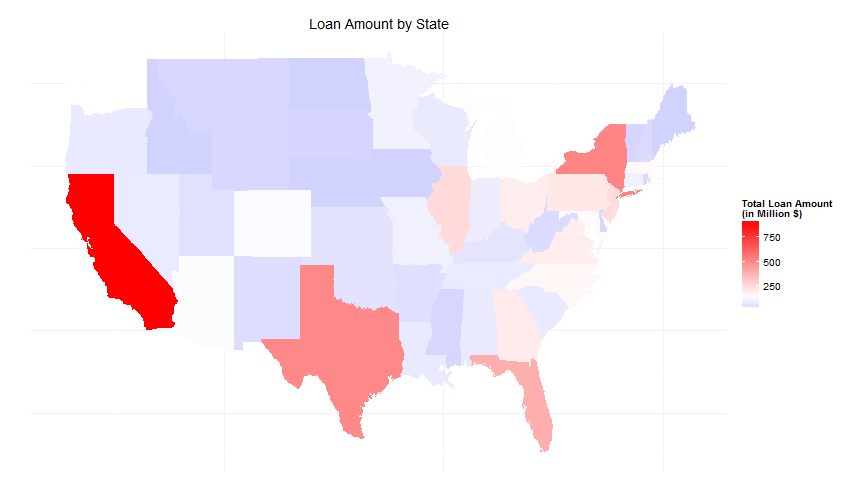

Outline
Background
Data Source
Visualization
Liangquan Zhou, Lu Han, Xiaoyao Yang
Borrowers complete applications on LendingClub.com
Lending Club evaluates the information, determines an interest rate, and instantly presents a variety of offers to qualified borrowers.
Investors select loans to invest and earn monthly returns.
Explore the influential factors of loans properties and major borrower features.
Lending Club publish all issued loans data.
More than 400 thousands loans. From July 2007 to September 2014.
Each loan record contains about 100 features, including:
Keep variables we are interested in.
Drop missing values and outliers.
Reformatting and Reshaping.
For Loan Properties:
For Borrower Profiles:

There still are a lot of things we can explore on lending club's loan dataset.